Chadi Helwe, PhD
CSC 464: Deep Learning for Natural
Language Processing
N-Gram Language Models
Motivation
What word is likely to follow?
The water of Walden Pond is so beautifully...You might conclude that a likely word is blue, or green, or clear.
but probably not refrigerator nor this
N-Gram Language Models
Language Models (LMs) (1/2)
A language model is a machine learning model that predicts upcoming words.
More formally, a language model assigns a probability to each possible next word, or equivalently gives a probability distribution over possible next words.
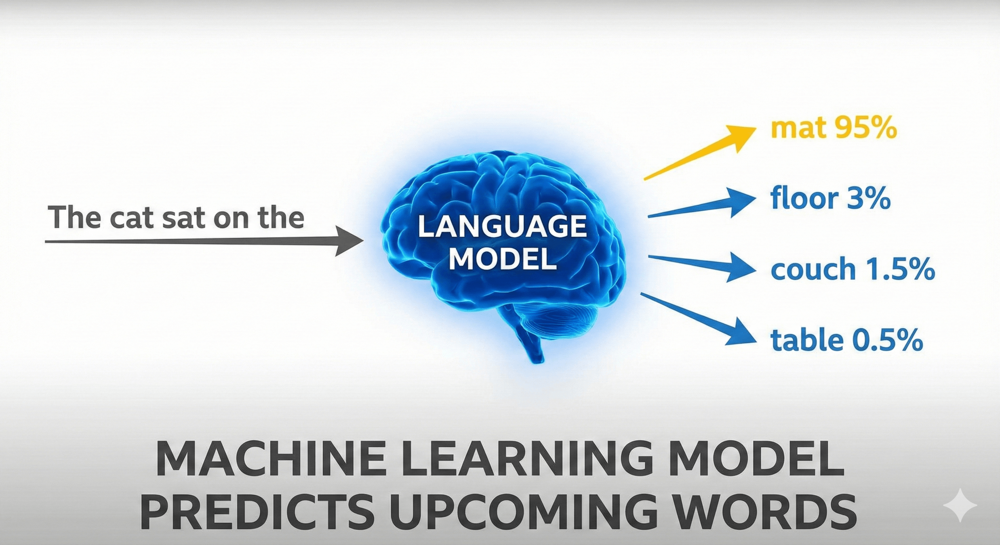
N-Gram Language Models
Language Models (LMs) (2/2)
Language models can also assign a probability to an entire sentence. Thus an LM could tell us that the following sequence has a much higher probability of appearing in a text:
all of a sudden I notice three guys standing on the sidewalk
than does this same set of words in a different order:
on guys all I of notice sidewalk three a sudden standing the
N-Gram Language Models
Why Do We Want to Predict the Next Word? (1/2)
The main reason is that large language models are built just by training them to predict words.
Large language models acquire extensive knowledge of language by predicting upcoming words based on neighboring words.
N-Gram Language Models
Why Do We Want to Predict the Next Word? (2/2)
This probabilistic knowledge acquired by LLMs can be very practical.
Consider correcting grammar or spelling errors like:
Their are two midterms
Everything has improve
There
improved
LLMs are able to help select the correct grammatical variant
N-Grams (1/2)
N-Gram Language Models
N-gram as a sequence of words:
The water, or water of.The water of, or water of Walden.N-gram as a model: a probabilistic model that can estimate the probability of a word given the n-1 previous words.
N-Grams (2/2)
N-Gram Language Models
P(w|h), the probability of a word w given some history h.
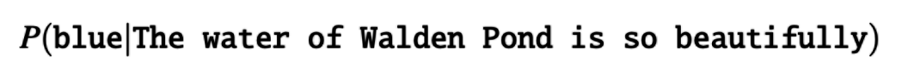
One way to estimate this probability is directly from relative frequency counts (e.g, Web):
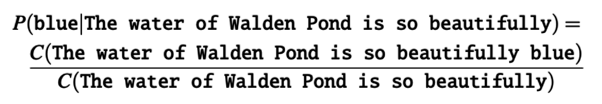
Why the Web Still is not Enough
N-Gram Language Models
If you tried to estimate the probability of the next word by looking for the entire prior context (a long history h) and counting how often each next word follows it, you’d run into a problem: most long histories basically never repeat exactly in your data.
For this reason, we’ll need more clever ways to estimate the probability of a word w given a history h, or the probability of an entire word sequence W.h
Chain Rule
N-Gram Language Models
How can we compute the probability of the whole sequence P(w1, w2, ..., wn)?
How can we compute the probability of the whole sequence P(w1, w2, ..., wn)?
One thing we can do is decompose this probability using the chain rule of probability:
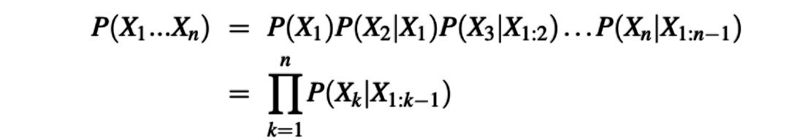
Applying the chain rule to words, we get:
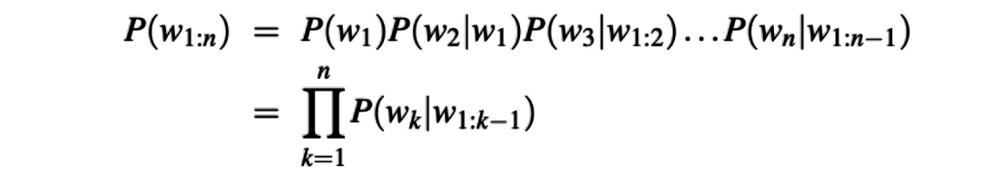
The Markov Assumption (1/4)
N-Gram Language Models
The intuition of the n-gram model is that instead of computing the probability of a word given its entire history, we can approximate the history by just the last few words.
The bigram model approximates the probability of a word based on all previous words, P(wn|w1:n−1), using only the conditional probability of the preceding word, P(wn|wn−1). This means the probability is calculated based on just the last word instead of all prior words.
The Markov Assumption (2/4)
N-Gram Language Models
We approaximate it with the probability
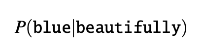
When we use a bigram model to predict the conditional probability of the next word, we are thus making the following approximation:
The Markov Assumption (3/4)
N-Gram Language Models
The assumption that the probability of a word depends only on the previous word is called a Markov assumption.
Markov models are the class of probabilistic models that assume we can predict the probability of some future unit without looking too far into the past.
We can generalize the bigram (which looks one word into the past)
to the trigram (which looks two words into the past) and thus to the n-gram (which looks n−1 words into the past).
The Markov Assumption (4/4)
N-Gram Language Models
Given the bigram assumption for the probability of an individual word, we can compute the probability of a complete word sequence.
How to Estimate Probabilities? (1/5)
N-Gram Language Models
To estimate the probabilities of bigrams or n-grams, we can use a method known as maximum likelihood estimation (MLE).
This approach involves obtaining counts from a corpus and normalizing these counts so that their values fall between 0 and 1. By doing this, we can derive MLE estimates for the parameters of an n-gram model.
How to Estimate Probabilities? (2/5)
N-Gram Language Models
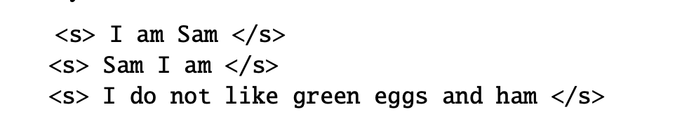
Here are the calculations for some of the bigram probabilities from this corpus
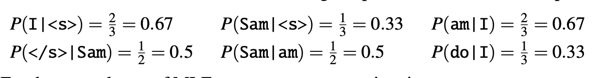
How to Estimate Probabilities? (3/5)
N-Gram Language Models
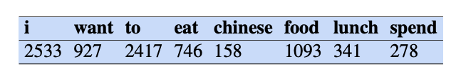
Unigram
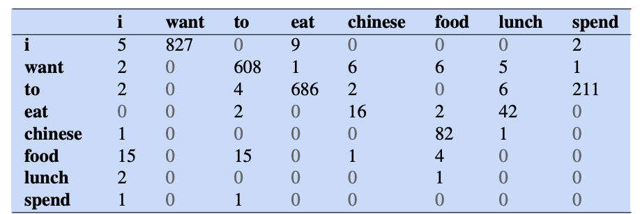
Bigram
How to Estimate Probabilities? (4/5)
N-Gram Language Models
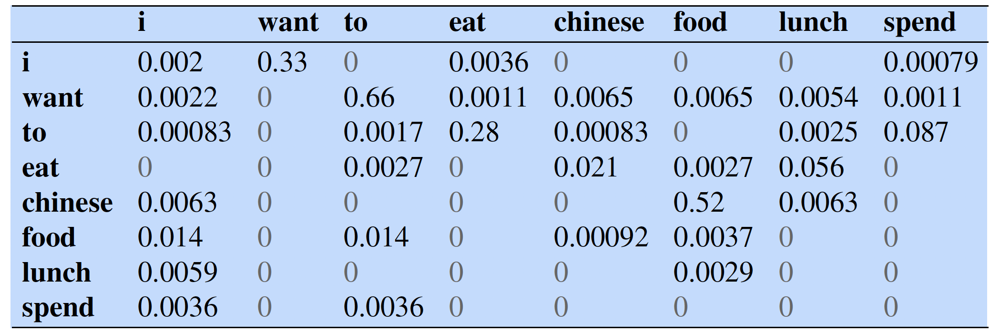
Bigram probabilities after normalization
How to Estimate Probabilities? (5/5)
N-Gram Language Models
Here are some useful other probabilities:
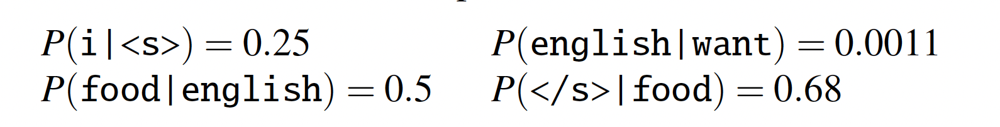
How to compute the probability of the sentence I want English Food
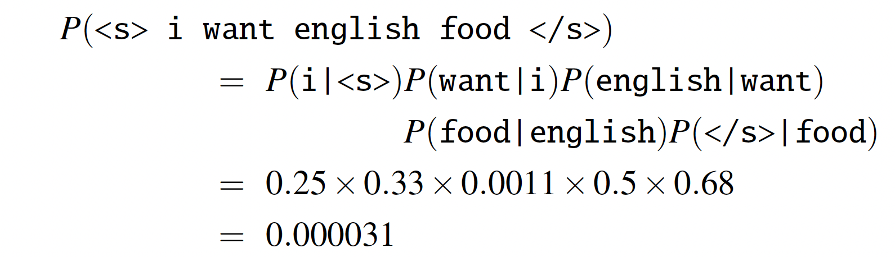
Numerical Stability in N-gram Models (1/2)
N-Gram Language Models
The Problem: Numerical Underflow
Probabilities are by definition < 1.
Multiplying many probabilities together (via the chain rule) results in extremely small numbers that lead to numerical underflow in standard floating-point representation.
The Solution: Log Probabilities
LMs always store and compute in log space.
Adding in log space is equivalent to multiplying in linear space.
Results are numerically stable and not as small.
Conversion: We only convert back to probabilities at the very end of the process by taking the exponential.
Numerical Stability in N-gram Models (2/2)
N-Gram Language Models
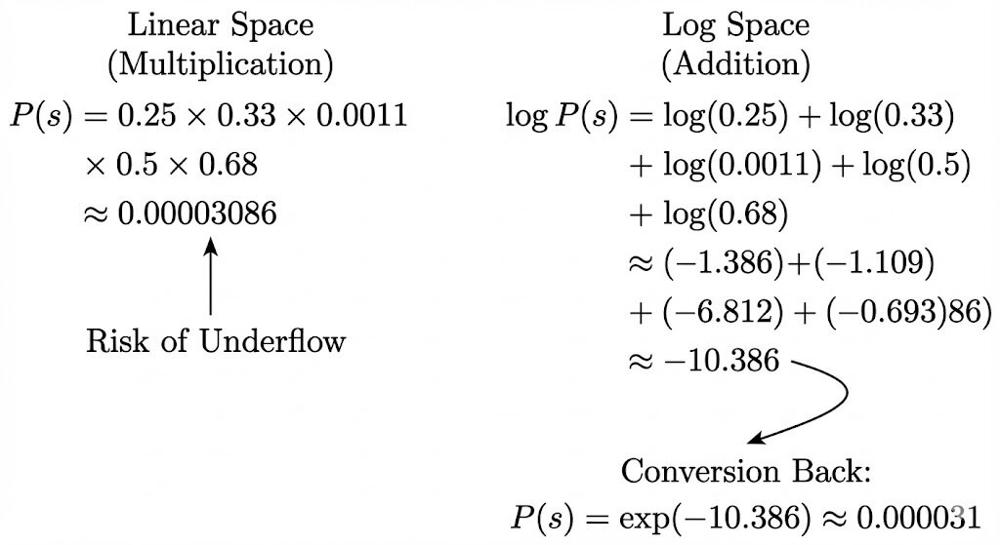
Efficiency and Storage at Scale
N-Gram Language Models
The Challenge: Massive Corpora
Datasets like Google’s Web 5-gram corpus contain up to 1 trillion words.
As N increases (Trigrams to 5-grams), the parameter space grows exponentially.
Storage Optimization Techniques
Quantization: Probabilities are stored using 4-8 bits instead of 8-byte floats.
Hashing: Strings are stored on disk; memory only holds 64-bit hashes.
Pruning: Low-frequency n-grams (below a threshold) are removed to save space.
Efficient Structures: Toolkits like KenLM use sorted arrays and merge sorts to build tables efficiently.
Approaches to Evaluation
N-Gram Language Models
Extrinsic Evaluation
Definition: Integrate the language model into an application (like machine translation) to assess performance improvements.
Trade-off: While this is the only definitive way to verify if a model improves a specific task, running these end-to-end systems is often slow and computationally expensive.
Intrinsic Evaluation
Definition: Measures model quality independently of any application, typically using Perplexity.
Trade-off: It allows for quick and cheap evaluation of potential improvements, but while it usually correlates with task performance, improvements must eventually be confirmed extrinsically.
The Standard Dataset Splits (1/2)
N-Gram Language Models
Training Set
Purpose: Used to learn the parameters of the model (e.g., calculating N-gram counts and normalizing them into probabilities).
Test Set (Held-Out Data)
Purpose: A separate dataset used only for final evaluation to unbiasedly estimate how well the model generalizes to new data.
The Goal: A better model assigns a higher probability to the unseen test data.
Development Set (Devset)
Purpose: Used for intermediate testing and tuning parameters (like smoothing constants).
Why separate? Repeatedly testing on the Test Set causes implicit tuning to its specific characteristics. You should only run the model on the Test Set once at the very end.
The Standard Dataset Splits (2/2)
N-Gram Language Models
Data Contamination (Training on the Test Set)
Definition: Accidentally including test sentences inside the training corpus.
Consequence: The model "memorizes" the answer, assigning artificially high probabilities and creating false performance metrics.
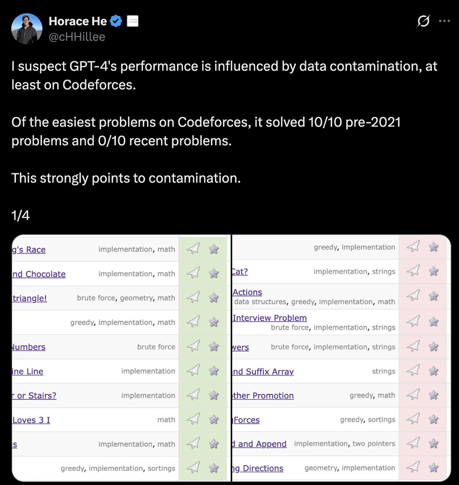
From Probability to Perplexity
N-Gram Language Models
The Evaluation Goal
A better language model assigns a higher probability to the test data.
It is "less surprised" by the words that actually occur.
The Problem with Raw Probability
The probability of a sequence depends on its length N.
Longer sequences have much lower probabilities regardless of model quality.
The Solution: Perplexity (PP)
Perplexity is the inverse probability of the test set, normalized by the number of words N.
It serves as a per-word metric, allowing comparisons across texts of different lengths.
The Mathematics of Perplexity
N-Gram Language Models
Formal Definition: For a test set
Using the Chain Rule (Bigram Model) We can expand this using the chain rule. For a Bigram model, it looks like this
Interpretation
Because of the inverse, higher probability = lower perplexity.
A lower perplexity indicates a better model.
Intuition: Branching Factor
N-Gram Language Models
Weighted Average Branching Factor
Perplexity can be thought of as the "weighted average branching factor" of a language.
Branching Factor: The number of possible next words that can follow any word.
Example
Imagine a language with 3 words: {red, blue, green}.
Case A (Random): If each word is equally likely P = 1/3, the perplexity is 3.
Case B (Predictable): If 'red' is highly likely P=0.8, the model is less confused. The perplexity drops to 1.89.
Conclusion: Better predictive power reduces the effective branching factor.
N-Gram Comparison (Wall Street Journal)
N-Gram Language Models
Comparing Models on WSJ Data: We trained different N-gram models on 38 million words and tested them on 1.5 million words.
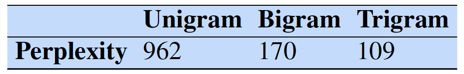
Analysis
As N increases, the model has more information about the context.
Trigrams are less surprised by the test data than Bigrams, resulting in lower perplexity.
Crucial Note: You can only compare perplexities if the models use identical vocabularies.
Sampling Sentences from a Language Model (1/2)
N-Gram Language Models
Definition: Sampling means generating sentences by choosing each word randomly according to its probability in the model.
Purpose: This allows us to "see" what the model has learned. We are likely to generate sentences the model considers probable.
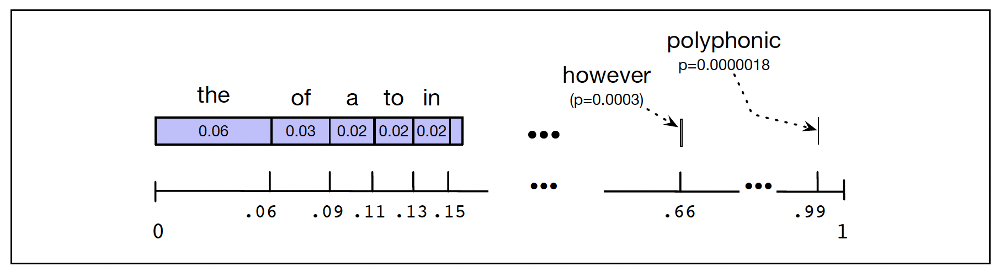
Sampling Sentences from a Language Model (2/2)
N-Gram Language Models
The Mechanism (How it Works)
Unigram (The "Number Line"): Imagine all words on a unit interval [0,1], with segments proportional to their frequency. We pick a random number, find its position, and output the word.
N-gram (e.g., Bigram):
Start by sampling a bigram beginning with <s>.
If the current word is w, sample the next word based on the distribution P(w_{next} | w).
Repeat until the end-of-sentence marker </s> is generated.
The Effect of N on Generalization
N-Gram Language Models
As we increase N, the model better captures the structure of the training data. This can be observed by sampling from models trained on the data.
Unigram: No coherence; random word salad.
Bigram: Local coherence (e.g., proper noun following a title), but sentences lack long-term meaning.
Trigram: Sentences are becoming more coherent and mimic the author's style.
4-gram: The output looks too much like the original text.
Example: "It cannot be but so" (A direct quote from King John).
The Sparsity Problem (Overfitting)
N-Gram Language Models
Why does the 4-gram model memorize?
The Math: Shakespeare’s oeuvre is small (~884,000 words), but the parameter space for 4-grams (V^4) is massive (7 x 10^{17}).
The Result: The probability matrices are ridiculously sparse.
Overfitting: Once the model chooses a specific 3-gram prefix (e.g., "It cannot be"), there is often only one possible next word in the entire training history.
The model does not "create" new language; it simply replicates the training set since it has no other options.
The Importance of Training Genre (1/2)
N-Gram Language Models
N-gram models are extremely dependent on their training corpus. They encode the specific vocabulary, grammar, and facts of that genre.
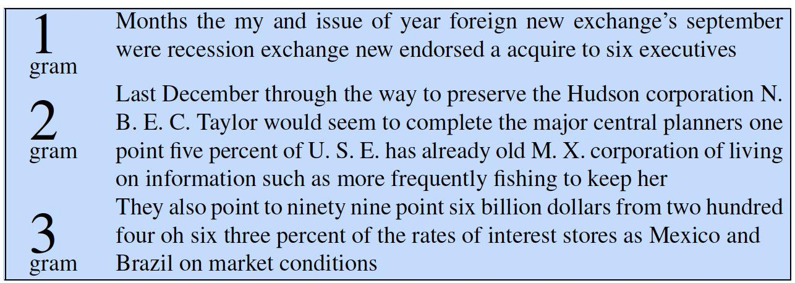
Model trained on Shakespeare
Model trained on WSJ
The Importance of Training Genre (2/2)
N-Gram Language Models
Genre/Dialect Specificity:
A model trained on Shakespeare generates "Why dost stand forth thy canopy...".
A model trained on the Wall Street Journal generates "Months the my and issue of year...".
There is often little overlap between models trained on different genres. To build a useful application (e.g., legal translation), your training data must match the task.
The Problem of Zeros (Sparsity)
N-Gram Language Models
Scenario: Suppose we are training a model on a corpus, and the trigram P(food | I, want) never appears.
Result: The count is 0, so the probability is 0
Consequence: Since we multiply probabilities (or add logs) to score a sentence, a single zero crashes the entire calculation.
Just because we haven't seen it in the training data doesn't mean it's impossible in the real world (e.g., “I want armadillos”).
Smoothing (1/3)
N-Gram Language Models
"Steal" a small amount of probability mass from frequent events and give it to unseen events.
Add-One Smoothing: Pretend we saw every possible N-gram one more time than we actually did.
The Formula (Bigram)
Numerator (+1): We add 1 to the count so it is never zero.
Denominator (+V): To keep probabilities summing to 1, we must add the Vocabulary size V to the denominator.
Smoothing (2/3)
N-Gram Language Models
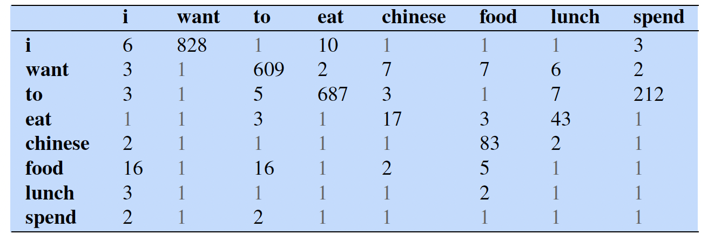
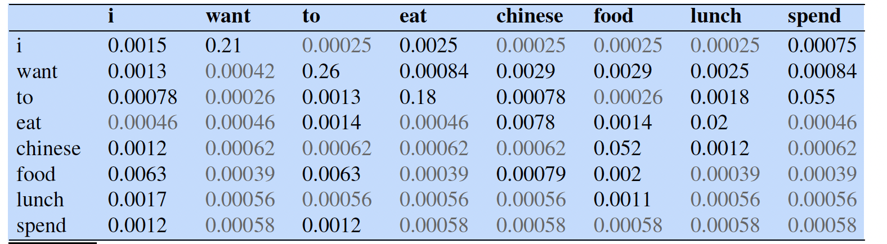
Smoothing (3/3)
N-Gram Language Models
One alternative to add-one smoothing is to move a bit less of the probability mass from the seen to the unseen events. Instead of adding 1 to each count, we add a add k fractional count k (0.5? 0.01?).
Backoff
N-Gram Language Models
In a backoff model, if the n-gram we need has zero counts, we approximate it by backing off to the (n-1)-gram. We continue backing off until we reach a history that has some counts.
Algorithm:
Check if the Trigram count .
If Yes: Use the Trigram probability.
If No: "Back off" to the Bigram probability .
Repeat: If the Bigram is also zero, back off to the Unigram .
Language Model Interpolation
N-Gram Language Models
Instead of choosing one model (as in Backoff), we always mix estimates from Trigrams, Bigrams, and Unigrams.
The Lambdas (λ): These are weights that must sum to 1 (λ1 + λ2 + λ3 = 1).
If we have lots of data, we set λ3 high (trust the Trigram).
If data is sparse, we set λ1 higher (trust the Unigram).